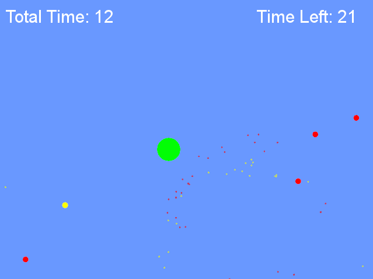
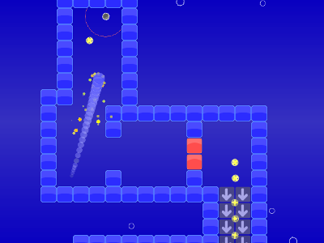
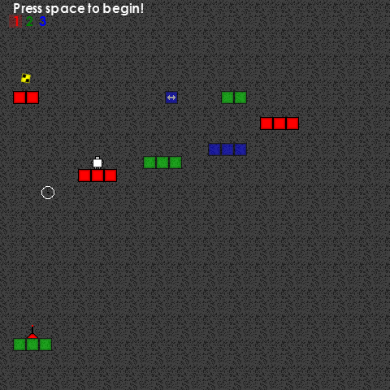
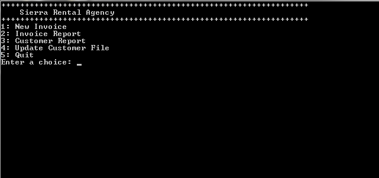

Here you will find a collection of my work. Class projects, games, experiments, etc. All files on this page are distributed via my Dropbox. Click the images for an enlarged view.
--- Games ---
| Collect the Gems | Download .exe Source Code |
|---|---|
|
A small game made with SFML. This game is timed. You collect the yellow gems (they add 1 second to the clock), and you avoid the red balls
as they subtract 1 second from the clock. Survive for as long as you can.
|  |
{kind=link}
| Amaball | Download Amaball |
|---|---|
|
This is a game where you guide a little ball through various levels collecting gems. It was designed
as a casual game to chill out to.
|
 |
{kind=link}
| Layered | Download Layered |
|---|---|
|
Layered is a platform game that also involves your memory. You will be charged with the task
of memorizing the location of three differently colored platforms. Each block
corresponds to a layer. Red for layer 1, green for 2, blue 3. You can only land on a red
block when you're on layer 1,etc.. When you start the level all the blocks will become black.
You must then navigate your way to the finish while collecting all of the yellow/black gems in the level.
|  |
{kind=link}
--- Class Projects ---
| Colliding balls with a heap (Java) | Download Source Code |
|---|---|
|
This is a program that was assigned as part of my abstract data types class. The initial program (which was provided) predicts when balls will collide. It finds the minimum time and then animates them until that collision occurs. This way all the collisions need not be checked every step (which would be sloooooow). The collision times were maintained in a 2D array, and the running time was O(n^2) as a result. My task: Replace the array with a min-heap. With the min-heap the run time can be brought down to O(nlogn). With 2000 balls there was a 142% increase in framerate and a 58% decrease in execution time. Not too shabby. Run the program via command line: "Program2.jar XXX" where XXX is either the number of balls to randomly generate, or a file with info about balls (samples provided) |
 |
| Game of Life with un-init. array (C) | Download |
|---|---|
|
This program is run via a UNIX command line. Run "gameoflife [FILE]" where FILE contains info
about the creature to simulate. Some samples are included.
|
 |
| Crossing Matchstick Game with Memoization (Python) | Download |
|---|---|
|
The rules of the game are so: You must take a match and jump two matches to cross it with another. The goal is to end up with all the matches crossed. A video of the game can be seen here: YouTube video
|
 |
--- Miscellaneous Programs and Utilities ---
| Car Maintenance Tracker | Download .exe Source Code |
|---|---|
|
This little program allows you to keep track of car maintenance. You enter when you last
changed the listed items as well as how often they should be changed. The next time you
should perform the maintenance is listed at the right. You can save a file containing
the data. |
{kind=link}
| Car Rental Invoice Tracker | Download .exe Source Code |
|---|---|
|
This is a command-line program for a faux car rental company. You can enter invoices and keep track of profits.
This program was built as part of a C++ class I took. The program was built in sections as we went
through the class learning different object-oriented concepts.
|  |
{kind=link}